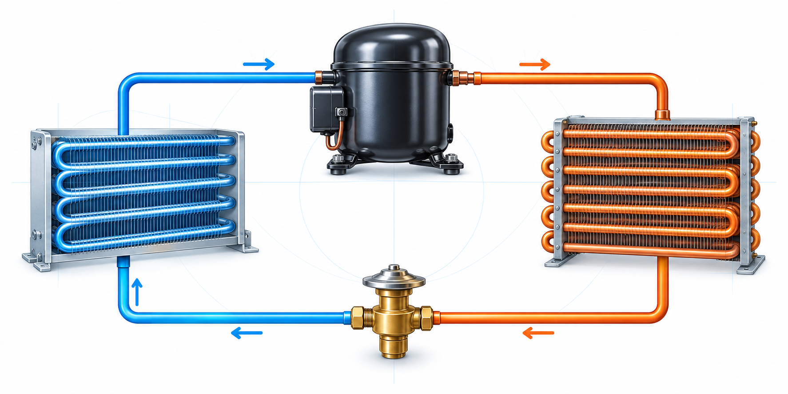
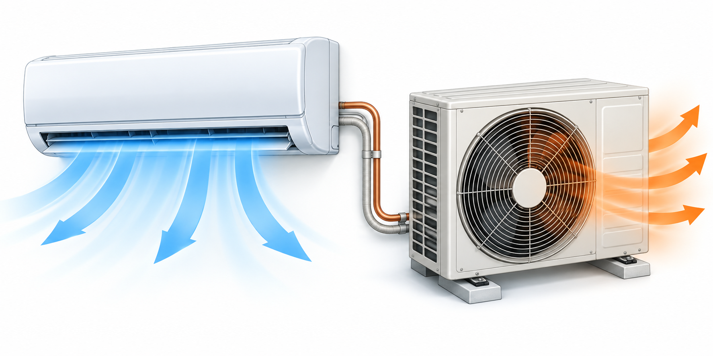
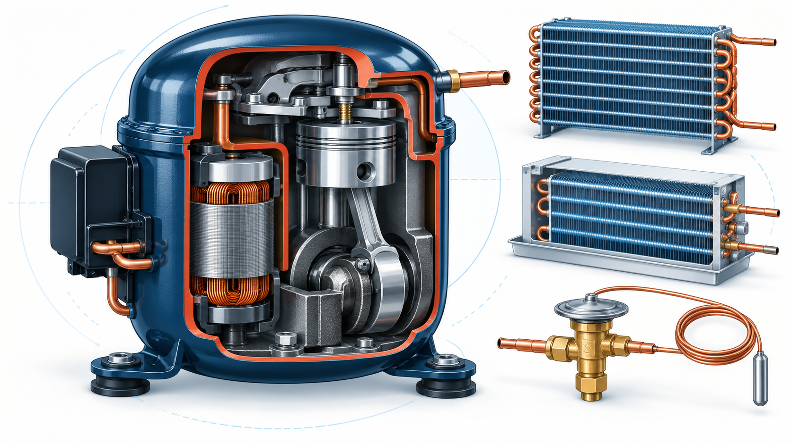

Refrigeración
Entendé el ciclo frigorífico
Conocé cómo circula el refrigerante y qué sucede en cada etapa: evaporación, compresión, condensación y expansión.
Explorar refrigeración →Un espacio de material educativo pensado para estudiar los principios, componentes y sistemas de refrigeración y climatización de forma clara y visual.

Conocé cómo circula el refrigerante y qué sucede en cada etapa: evaporación, compresión, condensación y expansión.
Explorar refrigeración →
Aprendé los fundamentos del acondicionamiento del aire, intercambio térmico, temperatura y humedad.
Explorar climatización →
Descubrí qué función cumplen el compresor, condensador, evaporador, válvula de expansión y otros componentes.
Ver componentes →El ciclo frigorífico extrae calor de un espacio y lo libera al exterior. Conocé qué ocurre en cada etapa y cómo circula el refrigerante.
Conocé cómo se comportan, cómo se clasifican y qué tener en cuenta para utilizarlos con seguridad y responsabilidad.
Explorar gases refrigerantes →Cómo absorbe y libera calor durante el ciclo.
Familias y designaciones más habituales.
La relación que ayuda a interpretar el sistema.
Buenas prácticas para su manejo y prevención.
Qué significa el GWP y cómo se relaciona con el clima.
En qué sistemas se utiliza cada refrigerante.
Elegí un recorrido y conectá los fundamentos con los equipos y sus aplicaciones.
Comprendé las etapas y el intercambio de calor.
Empezar recorrido → RECORRIDO 02 Conocé los refrigerantesExplorá sus propiedades, clasificación y seguridad.
Empezar recorrido → RECORRIDO 03 Reconocé los componentesIdentificá la función de cada elemento del sistema.
Empezar recorrido →